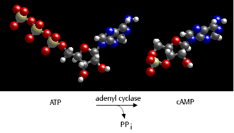

Molecular Genetics of Prokaryotes Problem Set
Problem 12: Effect of high glucose concentrations
Tutorial to help answer the questionAn E. coli cell is grown in the presence of high amounts of glucose. Which of the following is true?
A. The cell will utilize lactose as a carbon source exclusively. B. The level of cyclic AMP in the cell will be low C. The level of cyclic AMP in the cell will be high. D. Transcription of mRNA from the lac operon will be high. E. The cell will be forced to carry out fermentation.
Tutorial
Cyclic AMP synthesized from ATP
Control of the rate of transcription of an operons for catabolic enzymes such as the lac operon is regulated through intracellular levels of 3'-5'-cyclic adenosine monophosphate, or cAMP. cAMP is synthesized from ATP by the enzyme adenyl cyclase.
The intracellular level of cAMP is in turn regulated by the intracellular concentration of glucose. As glucose levels fall, cAMP levels rise. As glucose levels rise, cAMP levels fall.


University of Arizona
Updated: July 15, 1999
Contact the Development Team
http://www.biology.arizona.edu
All contents copyright © 1998-99. All rights reserved.